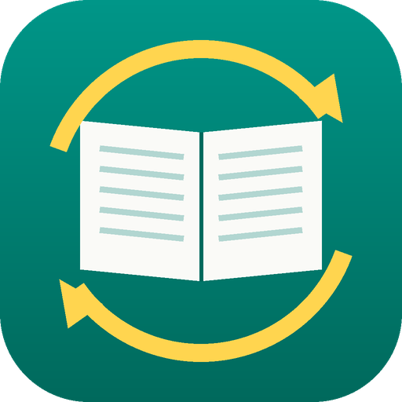

Privacy policy
Last updated 24 October 2026
ShelfSync is a book reader for Linux and Android. This policy explains what data it uses. In short, your data stays on your devices and in your own Google Drive, and the developer never receives any of it.
No ShelfSync servers
ShelfSync has no backend. The app talks directly from your device to Google's APIs. The developer does not run any server that receives, stores or processes your books, your reading activity or your Google account data.
Google account and Drive access
When you sign in with Google, ShelfSync asks for two limited permissions:
- See, edit, create and delete only the specific Google Drive files you use with this app (
drive.file). ShelfSync uses this to create aShelfSyncfolder and to upload, list, download and delete the books you add through the app. It cannot see any other files in your Drive. - See, create and delete its own configuration data in your Google Drive (
drive.appdata). ShelfSync stores small reading-position records here (book identifier, page, position on the page, device name and timestamp) so your devices can resume where you left off. This hidden folder is visible only to ShelfSync.
Google also tells the app your account's email address and name, which are shown in the app so you know which account is connected.
Data stored on your device
Downloaded books, cover thumbnails, your library list, reading positions, settings and the Google sign-in token are stored in the app's private data folder on each device. Uninstalling the app or using Sign out removes the token. Sign out also revokes the app's access to your Google account.
Sharing
ShelfSync does not sell, share or transfer your data to anyone. It contains no analytics, advertising or tracking, and does not collect crash reports.
Google API Services User Data Policy
ShelfSync's use and transfer of information received from Google APIs adheres to the Google API Services User Data Policy, including the Limited Use requirements.
Deleting your data
- Books: use Delete everywhere in the app, or delete the
ShelfSyncfolder in Google Drive. - Reading positions: in Google Drive, open Settings → Manage apps → ShelfSync → Delete hidden app data.
- Access: remove ShelfSync at myaccount.google.com/permissions.
Changes and contact
If this policy changes, the new version will be posted on this page. Questions can be asked by opening an issue at github.com/thisara-g/shelfsync.